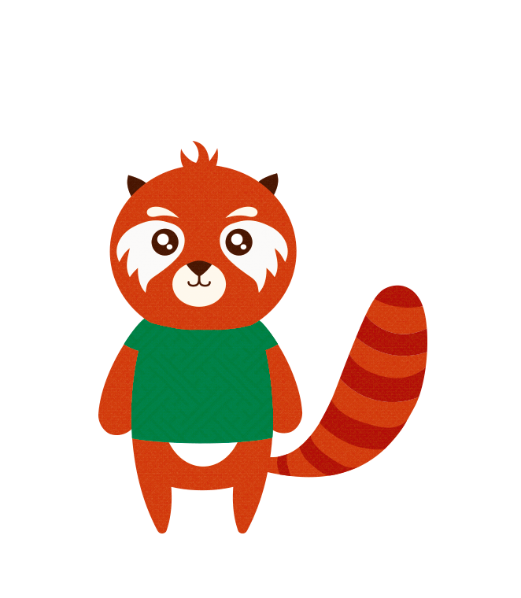

L'équipe Qwertz
Partir de zéro...
... pour arriver à une idée

Obstacles et résolution
Communication dans le groupe
Problèmes techniques
Ressources humaines
Complexité générale du projet
Comment faire connaître le projet ?
Chris et les enfants
Sur place
conclusion
+ de 11 Go de contenu
Code: 7 contributeurs / 259 commits / 6'579 lignes de code ajoutées
Quelques kilos de pizza
Une crêpe-party
Mais surtout une très belle aventure
Conclusion